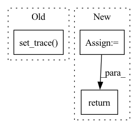

Pattern ID :26671
Before Change
pbar.set_postfix(ShellLoss = "{:.3f}".format(val_loss.item()),
KernelLoss = "{:.3f}".format(loss.item()))
if val_loss.item() > 1 or loss.item() > 1 or val_loss.item() < 0 or loss.item() < 0:
pdb.set_trace()
return
After Change
val_epoch = self.val_generator.epoch()
n_steps = self.train_generator.steps_per_epoch
sum_loss = 0
sum_val_loss = 0
with tqdm(train_epoch, total = n_steps,
desc = "Searching | Epoch {} | Training".format(self.epoch)) as pbar:
for step, (x, y_truth) in enumerate(pbar):
x = torch.as_tensor(x, device=self.device, dtype=torch.float)
y_truth = torch.as_tensor(y_truth, device=self.device, dtype=torch.float)
try:
val_x, val_y_truth = next(val_epoch)
except StopIteration:
val_epoch = self.val_generator.epoch()
val_x, val_y_truth = next(val_epoch)
val_x = torch.as_tensor(val_x, device=self.device, dtype=torch.float)
val_y_truth = torch.as_tensor(val_y_truth, device=self.device, dtype=torch.float)
// optim_shell
self.optim_shell.zero_grad()
val_y_pred = self.model(val_x)
val_loss = self.loss(val_y_pred, val_y_truth)
sum_val_loss += val_loss.item()
val_loss.backward()
self.optim_shell.step()
// optim_kernel
self.optim_kernel.zero_grad()
y_pred = self.model(x)
loss = self.loss(y_pred, y_truth)
sum_loss += loss.item()
loss.backward()
nn.utils.clip_grad_norm_(self.model.kernel.parameters(),
self.config["search"]["grad_clip"])
self.optim_kernel.step()
// postfix for progress bar
postfix = OrderedDict()
postfix["Loss(optim_shell)"] = round(sum_val_loss/(step+1), 3)
postfix["Loss(optim_kernel)"] = round(sum_loss/(step+1), 3)
pbar.set_postfix(postfix)
return round(sum_val_loss/n_steps, 3), round(sum_loss/n_steps, 3)
def validate(self):In pattern: SUPERPATTERN
Frequency: 5
Non-data size: 3
Instances Fragment ID: 79812480
Project Name: woodywff/nas_3d_unet
Commit Name: 483c269d68b745c65d71e2a8566c35bd92e0b584
Time: 2020-03-23
Author: woodywff@aliyun.com
File Name: search.py
M Class Name: Searching
N Class Name: Searching
M Method Name: train(1)
N Method Name: train(1)
M Parent Class:
N Parent Class:
M File Name: search.py
N File Name: search.py
M Start Line: 139
M End Line: 176
N Start Line: 138
N End Line: 180
Before Change
device=self.unconstrained_params.device
)
import pdb
pdb.set_trace()
out[:, self.full_idx] = pred
return pred
@jit.ignoreAfter Change
device=self.unconstrained_params.device
)
for i, (r, c) in enumerate(self.full_idx):
out[..., r, c] = torch.sigmoid(pred[..., i])
return out
@jit.ignore
def set_id(self, id: str) -> "InnovationMatrix": Fragment ID: 79812471
Project Name: strongio/torchcast
Commit Name: ecf0c670043427ceb99f0d477bab626527ce8f20
Time: 2021-06-19
Author: jacob.dink@strong.io
File Name: torchcast/exp_smooth/innovation_matrix.py
M Class Name: InnovationMatrix
N Class Name: InnovationMatrix
M Method Name: forward(3)
N Method Name: forward(3)
M Parent Class: torch.nn.Module
N Parent Class: torch.nn.Module
M File Name: torchcast/exp_smooth/innovation_matrix.py
N File Name: torchcast/exp_smooth/innovation_matrix.py
M Start Line: 58
M End Line: 66
N Start Line: 61
N End Line: 68
Before Change
flip_prob = torch.FloatTensor(x.shape[0], 1).uniform_(0.0, 1.0)
flip_mask = flip_prob < p
flip_mask = flip_mask.type(torch.bool).to(x.device)
import pdb; pdb.set_trace()
def random_translation(x, ratio):
max_t_x, max_t_y = int(x.shape[2]*ratio), int(x.shape[3]*ratio)After Change
flip_prob = torch.FloatTensor(n, 1).uniform_(0.0, 1.0)
flip_mask = flip_prob < p
flip_mask = flip_mask.type(torch.bool).view(n, 1, 1, 1).repeat(1, c, h, w).to(x.device)
x[flip_mask] = torch.flip(x[flip_mask].view(-1, c, h, w), [3]).view(-1)
return x
def random_translation(x, ratio): Fragment ID: 79812473
Project Name: postech-cvlab/pytorch-studiogan
Commit Name: 8c7aa6d098bb486d361c49f6fa28d42399f54503
Time: 2020-08-23
Author: first287@naver.com
File Name: utils/icr.py
M Class Name: AnonimousClass
N Class Name: AnonimousClass
M Method Name: random_flip(2)
N Method Name: random_flip(2)
M Parent Class:
N Parent Class:
M File Name: utils/icr.py
N File Name: utils/icr.py
M Start Line: 18
M End Line: 21
N Start Line: 25
N End Line: 30
Before Change
return coefficient
def transform(self, x, deformed_verts, deformation_parameters):
import ipdb;ipdb.set_trace()
deformed_verts = deformed_verts[:,::self.template_subdivision]
return tps_functions.transform(x, deformed_verts,
deformation_parameters)
After Change
def transform(self, x, deformed_verts, mean_shape_verts,
deformation_parameters):
deformed_verts = deformed_verts[:,::self.template_subdivision]
mean_shape_verts = mean_shape_verts[:,::self.template_subdivision]
return self.kernel_based_transform(x, deformed_verts,
mean_shape_verts)
class RBFDeformer(nn.Module): Fragment ID: 79812472
Project Name: ebartrum/lightning_gan_zoo
Commit Name: 3a7f8734b4a4fd96eb5ef1122925cd8d8cdb4165
Time: 2021-05-04
Author: edward.bartrum@gmail.com
File Name: core/anigan/deformer.py
M Class Name: KernelDeformer
N Class Name: KernelDeformer
M Method Name: transform(5)
N Method Name: transform(4)
M Parent Class: nn.Module
N Parent Class: nn.Module
M File Name: core/anigan/deformer.py
N File Name: core/anigan/deformer.py
M Start Line: 38
M End Line: 41
N Start Line: 47
N End Line: 52
Before Change
x = x.to(torch.float32)
import pdb
pdb.set_trace()
config = set_evasion_model(query, victim_input_shape, victim_input_targets)
x_adv, y_adv = init_hopskipjump(config, data)
x = torch.cat((x, x_adv))
y = torch.cat((y, y_adv))After Change
result = torch.as_tensor(result)
result = result.clone().detach()
print(result.shape)
y = torch.Tensor([query(x) for x in result])
y = y.long()
return result, y
Fragment ID: 79812475
Project Name: trailofbits/privacyraven
Commit Name: dd71a208fe41d3cb3854115c2ce4d4318b3d52e0
Time: 2020-10-21
Author: suhashussain1@gmail.com
File Name: src/privacyraven/extraction/synthesis.py
M Class Name: AnonimousClass
N Class Name: AnonimousClass
M Method Name: hopskipjump(6)
N Method Name: hopskipjump(6)
M Parent Class:
N Parent Class:
M File Name: src/privacyraven/extraction/synthesis.py
N File Name: src/privacyraven/extraction/synthesis.py
M Start Line: 139
M End Line: 155
N Start Line: 118
N End Line: 144